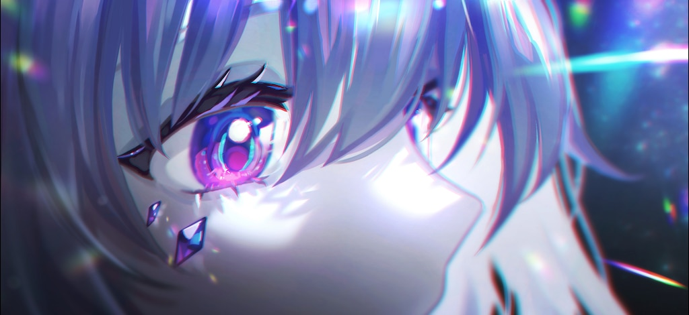
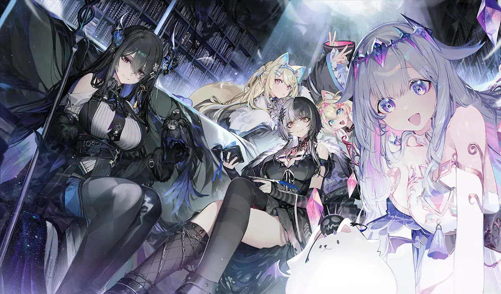
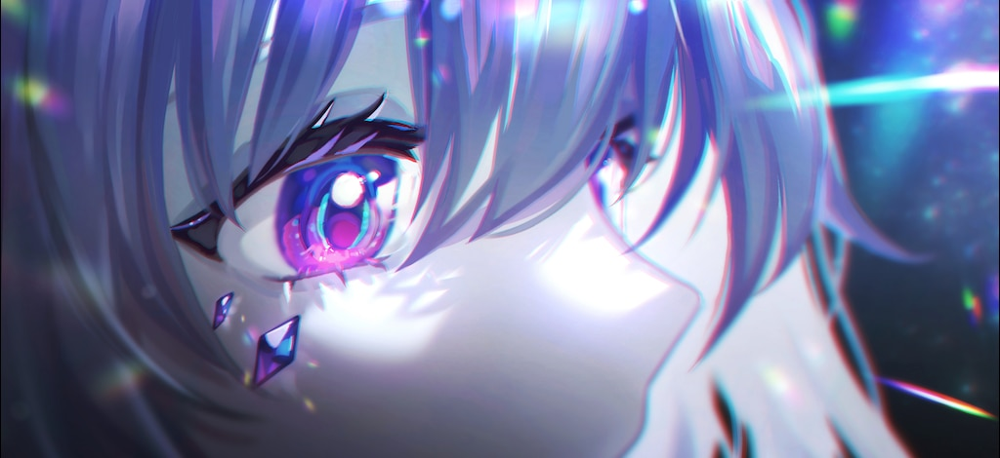
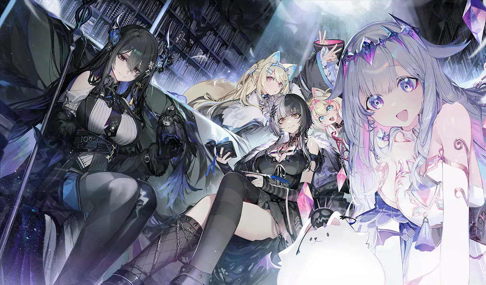

Sobre Koseki Bijou
Koseki Bijou es la gema viviente de Hololive English - Advent. Formada a partir de la cristalización de todas las formas de emoción humana, Koseki Bijou es "La Joya de las Emociones". Durante años y decadas, emociones de belleza y suciedad por igual se han entretejido en ella bajo una inmensa presión, resultando en una brillantez inigualable. Es una de las miembros más queridas de su generación.
Su concepto representa una joya antigua que ha despertado para explorar el mundo humano… y para hacer speedruns, cantar covers cristalinos y bromear con sus compañeras.
Hololive Advent – Sus Compañeras
Advent es la tercera generación de Hololive English, un grupo formado por seres poco comunes, cada uno con un origen extraño y un encanto único.
🕮 Shiori Novella
La bibliotecaria del abismo. La chica misteriosa con una voz tan suave como páginas antiguas deslizándose. Guarda muchos secretos… muchos.
👑 Nerissa Ravencroft
La diva de Advent. Su voz es la noche misma: profunda, magnética y capaz de estremecer a cualquiera. Biboo la llama “Rissa”.
🐾 Fuwawa & Mococo Abyssgard
Las gemelas caninas del caos adorable. Dos espíritus inseparables que vibran entre ladridos suaves, energía infinita y un cariño genuino por su audiencia y sus compañeras.
Galería de Biboo
Imagenes relacionadas sobre Koseki Bijou, su estética y sus amigas de Advent.
 


